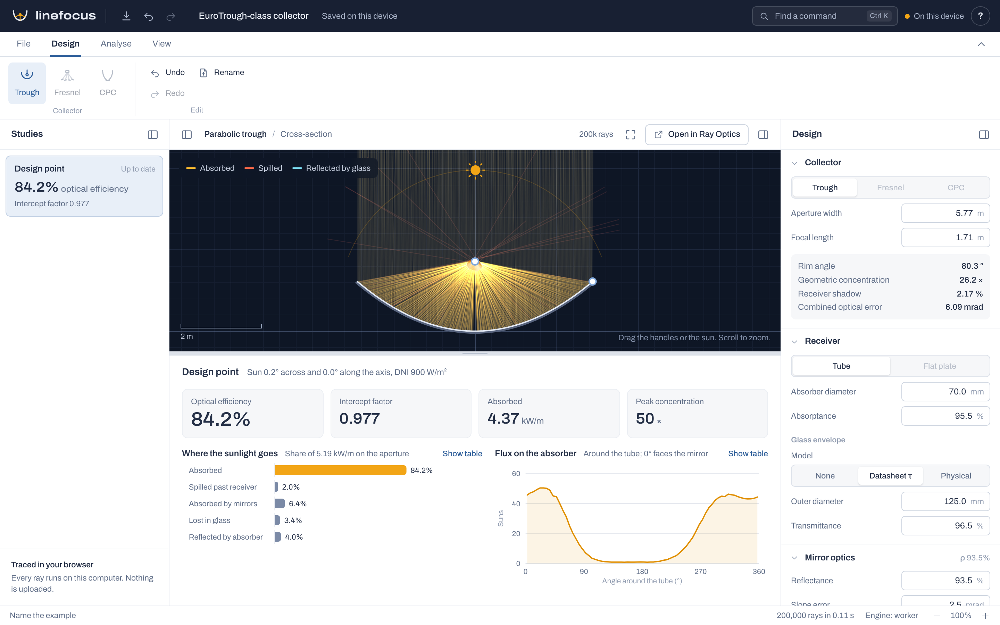

See where the sunlight goes.
Linefocus traces sunlight through a solar collector's cross-section, ray by ray, in your browser. Change the mirror, the receiver or the sun and the energy balance updates in a fraction of a second.

Every watt is accounted for.
Each ray ends up in exactly one place: the absorber, the mirror, the glass, or the sky. So the losses always add up, and you can see which one to work on next.
{{efficiency}}
optical efficiency of a EuroTrough-class collector at 900 W/m², with a 70 mm absorber in a glass envelope
Built for the questions designers ask.
Linefocus models the physics that decides whether light reaches the absorber. The definitions are written down, so you can check any number by hand.
- Real optical errors
- Pillbox, Gaussian or Buie circumsolar sunshapes; mirror slope error and specularity as separate inputs; tracking misalignment.
- Glass that refracts
- Model an envelope from its datasheet transmittance, or as real glass with Fresnel reflection, refraction and bulk absorption at any sun angle.
- Shape it by hand
- Drag the aperture, the focus or the sun on the cross-section, or scrub any value by dragging its label. Each drag is one undo step.
- Flux on the absorber
- See the local concentration around the tube, the intercept factor, and the absorbed power per metre of collector.
- Yours, and private
- Designs are saved in your browser and download as plain JSON with a published schema. Nothing is uploaded.
- Open in Ray Optics
- Send any cross-section to Ray Optics Simulation, the open-source optics sandbox Linefocus grew out of, to explore it further.
Checked, not just plausible.
Every release passes tests that compare the tracer with results worked out independently.
{{oracleWorst}}largest difference from Ray Optics Simulation across {{oracleCases}} shared scenes, including heavy row blocking
0.003agreement of the trough intercept factor with a semi-analytic Gaussian calculation
2σslope error spreads reflected light by twice the error, as the law of reflection says it must, and Fresnel and Snell's laws hold at oblique sun angles
What it doesn't do yet.
- Linear Fresnel reflectors and compound parabolic concentrators are on the way. Today Linefocus designs parabolic troughs.
- It traces a 2D cross-section. End losses of a finite row are an analytic correction, not traced.
- Mirrors are specular with Gaussian errors. Dust and diffuse scattering are not modelled.
- It reports absorbed optical power. Heat loss and fluid temperature are outside its scope.
- It is for concept design and comparison. Check a final design with an established tool such as SolTrace or Tonatiuh.